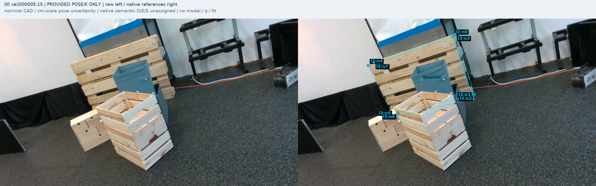
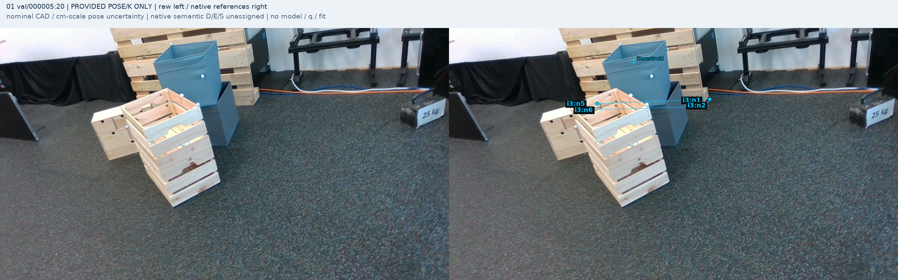
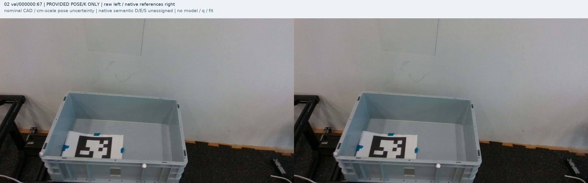
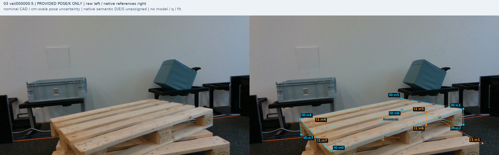
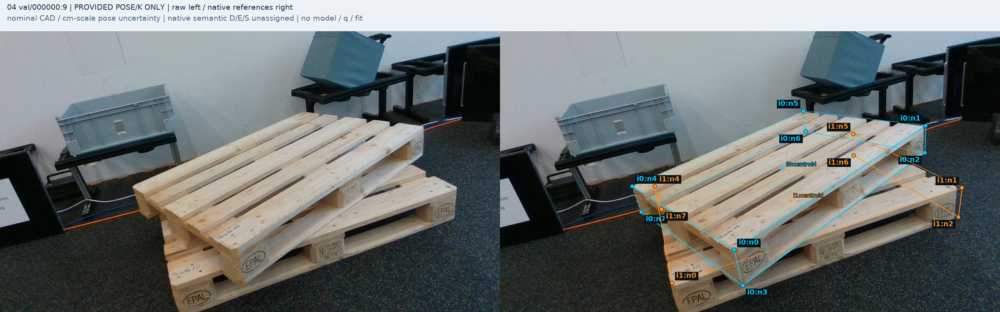
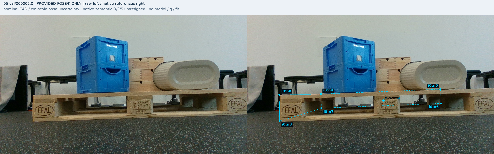
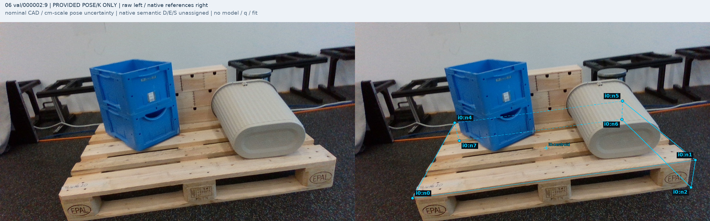
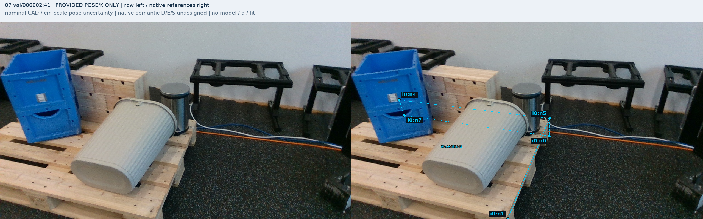
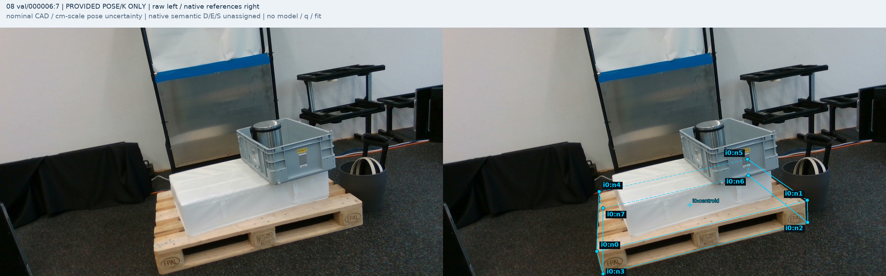
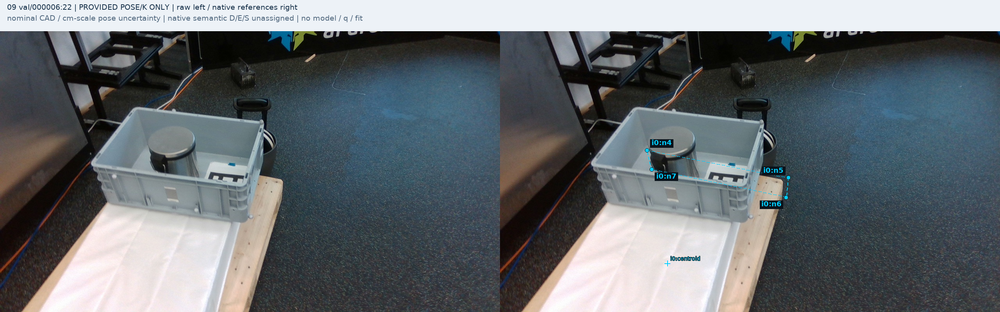

00 val/000005:15
i3: D,D,D,D,D,E,U,D

제공 pose/K와 원 V74 규칙만 사용했습니다. 원본 RGB와 별도 표시 복사본을 나란히 보여줍니다. source 역할 후보 D39/E10/S2/OOF35/U18이며 사람 gold·전체 학습 준비 완료를 뜻하지 않습니다. q 또는 가림 모델 출력은 읽지 않았습니다.
명목 pose/치수의 cm급 불확실성, nonexclusive visible masks, 실제 query target 대응 미확정을 유지합니다. OOF는 명목 참조 기준이며 exact pixel truth가 아닙니다.
i3: D,D,D,D,D,E,U,D

i3: OOF,D,D,OOF,OOF,E,U,OOF

i0: OOF,OOF,OOF,OOF,OOF,OOF,OOF,OOF; i1: OOF,OOF,OOF,OOF,OOF,OOF,OOF,OOF

i0: D,D,D,OOF,D,D,S,D; i1: OOF,D,OOF,OOF,E,E,U,U

i0: D,D,D,D,D,D,S,D; i1: D,D,D,OOF,E,E,U,U

i0: D,OOF,OOF,D,U,U,U,U

i0: D,D,D,OOF,U,E,U,U

i0: OOF,U,OOF,OOF,E,D,D,U

i0: D,D,D,D,D,E,U,U

i0: OOF,OOF,OOF,OOF,E,D,D,U

104개 제안·근거 · 검토 요약 · 원 참조 seal